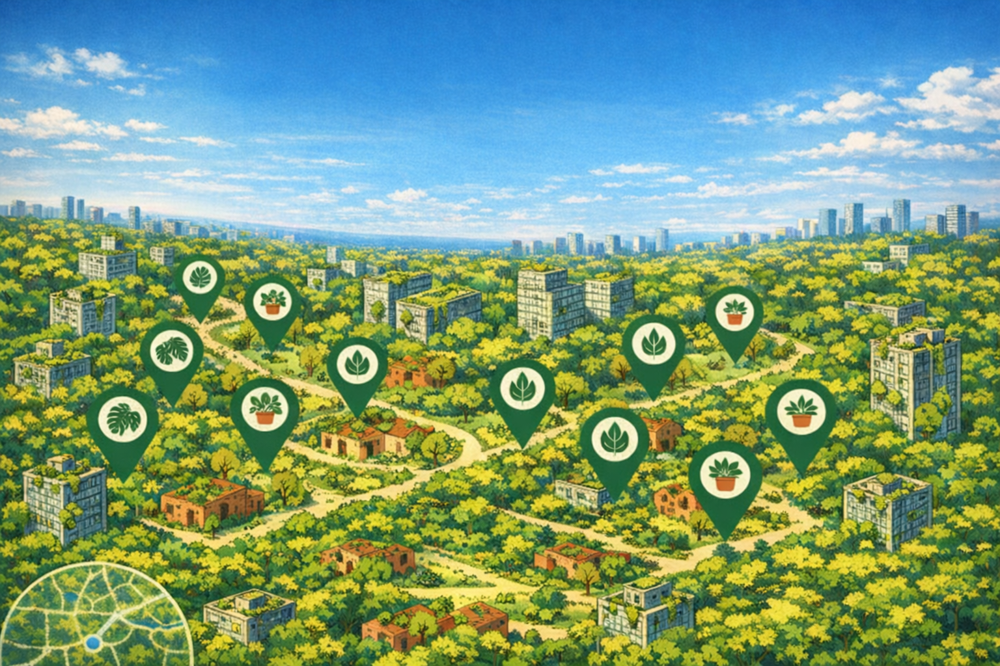

Grönare tillsammans!
Plot Twist är webbsidan som låter växter vandra mellan hem. Lägg upp en stickling, hitta något du vill ha och möts i verkligheten. En karta, en nål, ett byte — och ett grönare kvarter.
Hur det funkar
Lägg upp en växt
Ta ett foto, skriv namn, plats och välj ljusnivå. Klart!

Hitta något du vill ha
Klicka på en nål på kartan och skicka en förfrågan.

Möt grannen
Bestäm tid och plats — byt växter i verkligheten.
Vår idé
Vi tror att grönska binder människor samman. Plot Twist gör det enkelt att dela växter, sticklingar och gemenskap — ett byte i taget. Ett grönare kvarter börjar med en enda stickling.